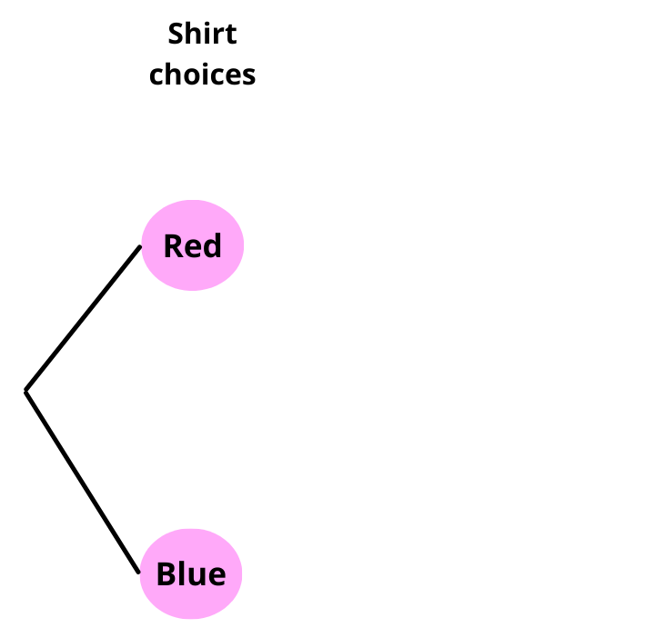
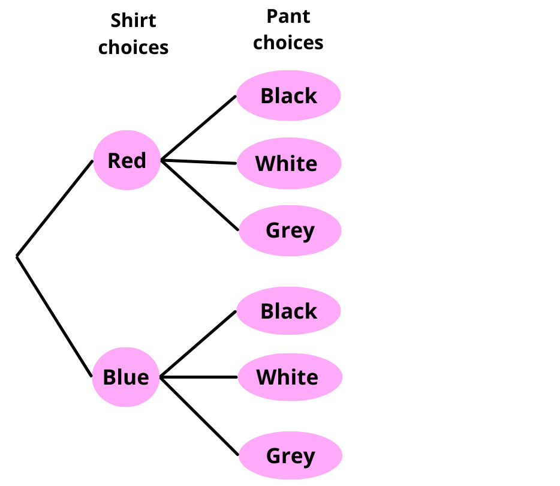
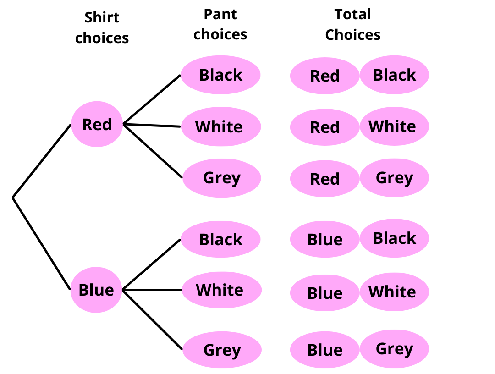

Probability
Probability is a way to measure how likely something is to happen. It helps us predict the chances of different events. Probability can be expressed as:
- Fractions: e.g., ½ (one out of two chances)
- Decimals: e.g., 0.5
- Percentages: e.g., 50%
Basis Terms Related to Probability
Experiment: An action or process that leads to different possible results.
Example:
Rolling a die, flipping a coin, etc.
Outcome: A possible result of an experiment.
Example:
When rolling a die, the possible outcomes are 1, 2, 3, 4, 5, and 6.
Sample Space: The set of all possible outcomes in an experiment.
Example:
- For flipping a coin, the sample space is {Heads, Tails}.
- For rolling a die, the sample space is {1, 2, 3, 4, 5, 6}.
Event: A specific outcome or a set of outcomes from an experiment.
Example:
Getting an even number (2, 4, 6) when rolling a die is an event.
Favorable Outcome: The outcome that we are interested in or looking for.
Example:
If we want to roll a 4 on a die, then the favorable outcome is 4.
Tree Diagram for Calculating the Number of Possible Outcomes
A tree diagram is a visual way to list all possible outcomes of an event. Each branch represents a different choice, and multiplying along the branches helps calculate the total number of possible outcomes.
Example: Emma's Outfit Choices
Emma is selecting an outfit for the day. She has:
2 shirts → Red, Blue
3 pants → Black, White, Gray
To find the total number of outfit choices, we can use a tree diagram.
Step 1: Start with the first choice (Shirt)

Step 2: Add the second choice (Pants)
For each shirt, she can choose one of 3 pants (Black, White, or Gray).

Step 3: List the Possible Outcomes
Each path in the tree represents one possible outfit combination:

Total number of outcomes:
2 × 3 = 6
Probability Scale
The probability of an event happening is always between 0 and 1 (or 0% to 100%):
-
Impossible Event: If an event has a probability of 0, it cannot happen.
Example: Rolling a 7 on a normal die (since a die only has numbers 1-6). -
Certain Event: If an event has a probability of 1, it will definitely happen.
Example: The sun will rise tomorrow. -
Between 0 and 1: Most events fall between 0 and 1.
Example: The probability of getting heads when flipping a coin is ½ (50%).
The probability of an event happening is:
P(Event) =
Example: Rolling a Die
A fair die has 6 faces numbered 1 to 6. What is the probability of rolling a 3?
Favorable outcome = 1 (only one face has 3)
Total outcomes = 6 (since a die has six faces)
P(3) = =
Example: Probability of rolling an even number (2, 4, or 6) on a dice?
Favorable outcomes = 3 (2, 4, 6)
Total outcomes = 6
P(Even) = = =
Equally Likely Outcomes: When all possible outcomes have the same chance of happening.
Example:
In a fair coin toss, heads and tails are equally likely because both have a ½ probability.
Unequally Likely Outcomes
When some outcomes have a higher chance of happening than others.
Example:
If a bag contains 4 red marbles and 1 blue marble, picking a red marble is more likely than picking a blue one.
Independent Events
Two events are independent if the occurrence of one event does not affect the probability of the other event occurring.
Examples:
-
Flipping a Coin Twice:
The outcome of the first flip (heads or tails) does not affect the outcome of the second flip -
Picking a Marble from a Bag, Then Replacing It, and Picking Again:
If you pick a marble from a bag, put it back, and pick again, the first pick does not change the number of marbles in the bag for the second pick.
Dependent Events
Two events are dependent if the occurrence of the first event affects the probability of the second event.
Examples:
-
Picking Marbles Without Replacement:
If you pick a marble from a bag without putting it back, the second pick is affected because there are fewer marbles left. -
Choosing Students for a Team Without Replacement:
If a teacher picks a student for a team and does not replace them, the number of remaining students changes.